여행 안전 안내
이 페이지는 문화유산·관광지를 소개하는 자료입니다. 현재 방문을 권유하지 않습니다.
정치적 구금 위험·국경 제약 등이 있으므로 관광 방문을 권하지 않습니다. 출발 전 공식 여행경보를 확인하세요
관광 명소 15곳
사진은 Wikimedia Commons에 공개된 실제 촬영본이며, 저작자와 라이선스를 각 사진 아래에 적었습니다. 촬영한 날씨·시기·구도에 따라 실제 모습은 다를 수 있습니다. 맞는 사진을 아직 찾지 못한 1곳은 비워 두었습니다.
-

사진: F.farenco · CC BY-SA 4.0 · Wikimedia Commons 미르성Мірскі замак
15세기 말 고딕에서 르네상스·바로크로 확장된 세계유산; 중동부 유럽 성곽사의 접점.
-
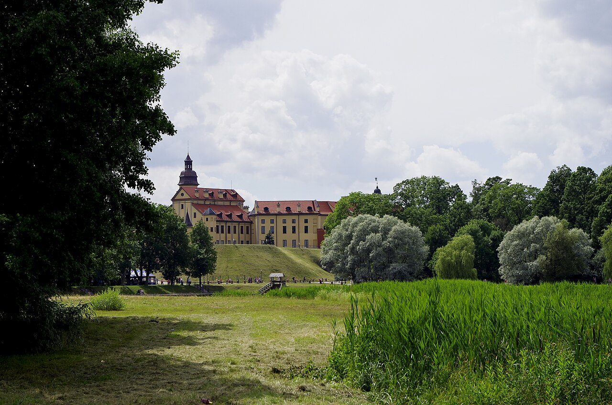
사진: sandexx · CC BY 3.0 · Wikimedia Commons 네스비시 궁전·성곽Нясвіжскі палацава-паркавы комплекс
라지비우 가문의 16세기 이후 궁전·예배당·공원 세계유산; 미르성과 역사적 연결.
-
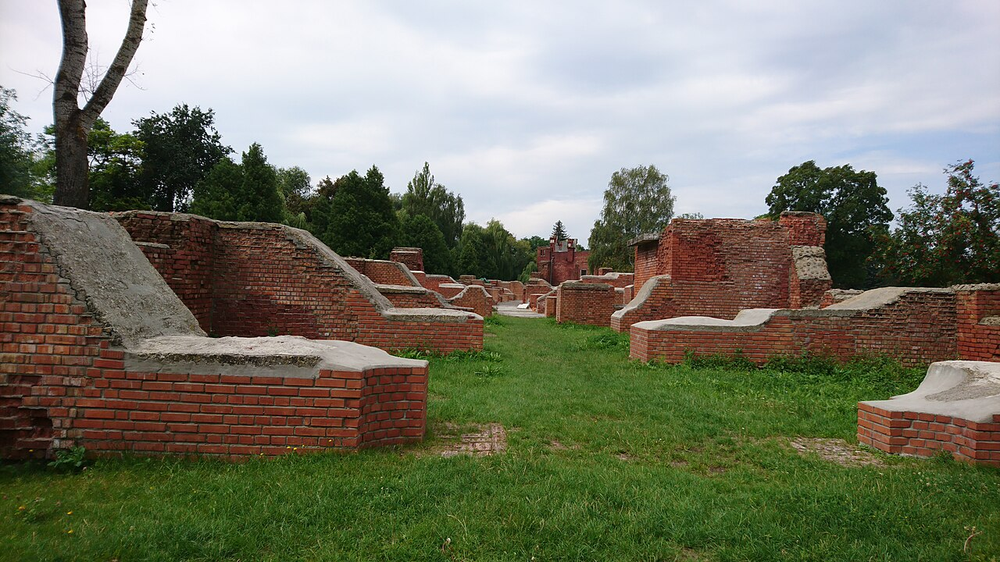
사진: Nakonana · CC BY-SA 4.0 · Wikimedia Commons 브레스트 요새Брэсцкая крэпасць
19세기 제정 러시아 시대 요새가 1941년 독일 침공 저항을 기념하는 기억공간으로 변모.
-
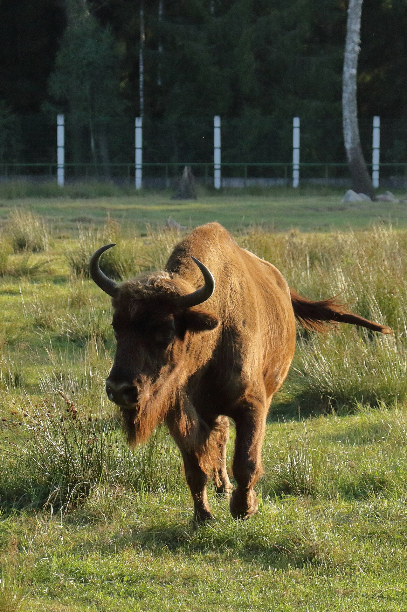
사진: Eternal Beginner · CC BY-SA 4.0 · Wikimedia Commons 벨라베자 원시림Белавежская пушча
폴란드와 공유하는 세계자연유산·저지대 온대 원시림; 유럽들소 보전과 연계.
-
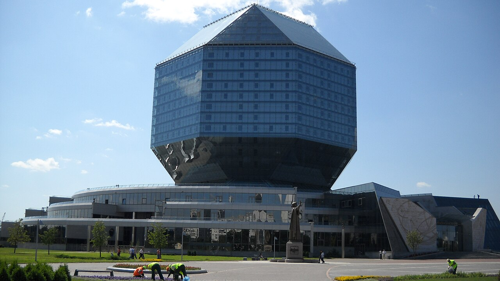
사진: EuroAsia Vizion from New York · CC BY 2.0 · Wikimedia Commons 민스크 국립도서관Нацыянальная бібліятэка Беларусі
현대 벨라루스의 상징적 공공건축으로 소련시기 고전적 도심건축과 대비됨.
-
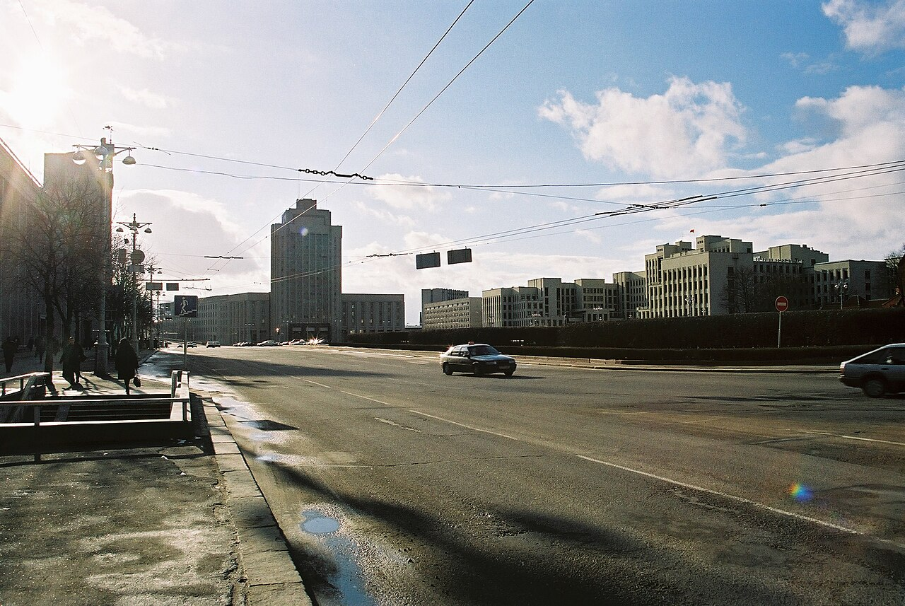
사진: 작성자 미상(Commons 파일 페이지 참고) · CC BY-SA 2.0 · Wikimedia Commons 민스크 독립광장·붉은교회Плошча Незалежнасці / Чырвоны касцёл
20세기 초 종교건축과 소련시대 도시계획이 한 광장에서 만남.
-
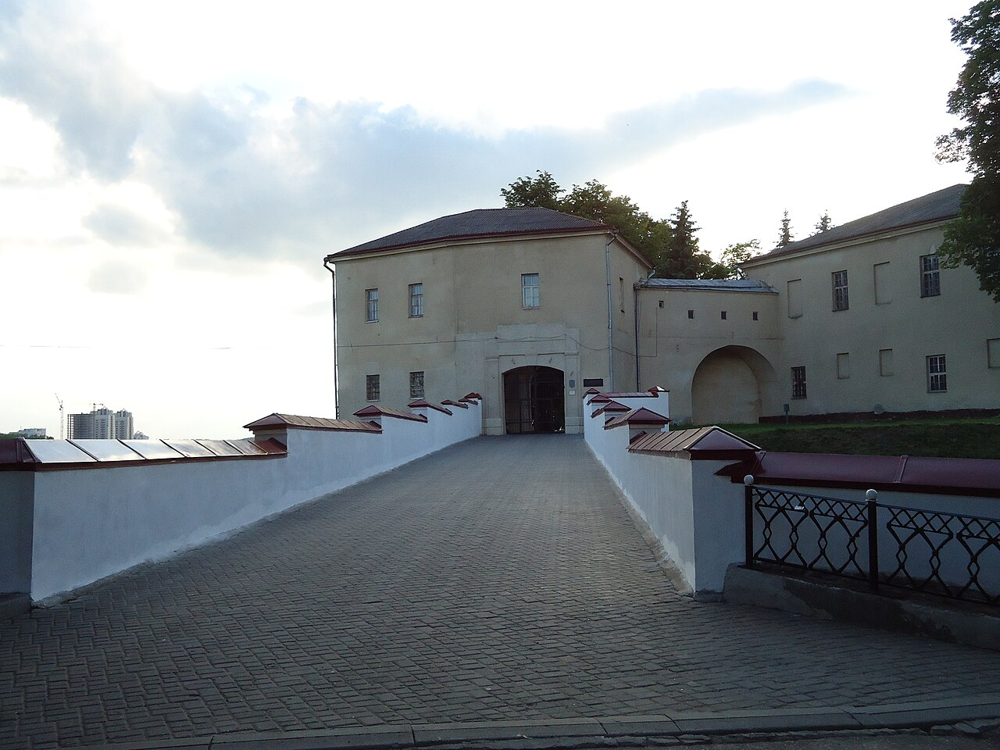
사진: Viktar Palstsiuk · CC BY-SA 3.0 · Wikimedia Commons 흐로드나 구시가지·구성Стары замак у Гродне
리투아니아 대공국·폴란드-리투아니아 연방사와 연결되는 도시유산.
-
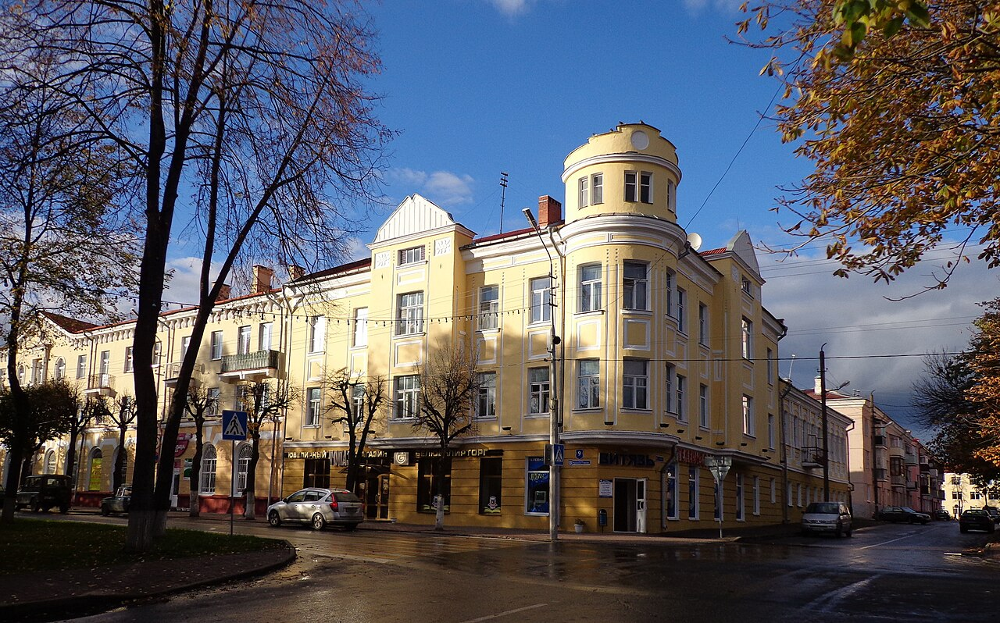
사진: Jurasikt · CC BY 3.0 · Wikimedia Commons 폴라츠크 성 소피아 대성당Сафійскі сабор у Полацку
중세 폴라츠크 공국의 종교도시 유산; 현재 보이는 건물은 18세기 바로크 재건이 주요 형태.
-
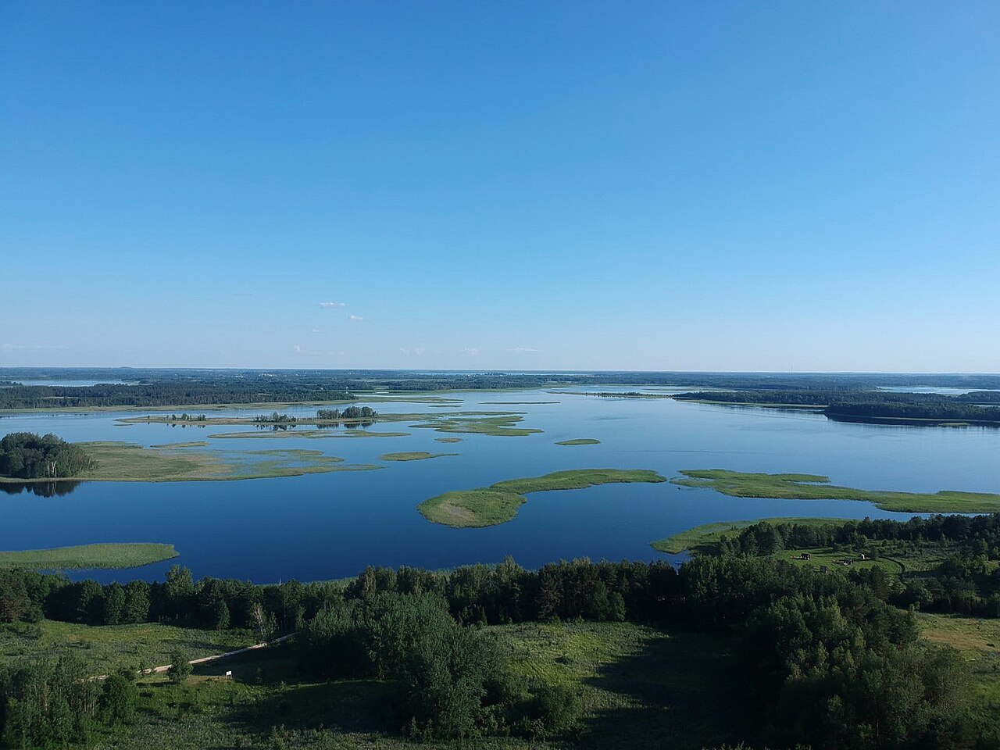
사진: Chystakhvalau Uladzimir · CC BY-SA 4.0 · Wikimedia Commons 브라슬라우 호수군Браслаўскія азёры
빙하 작용으로 형성된 다수 호수와 보호구역 생태.
-
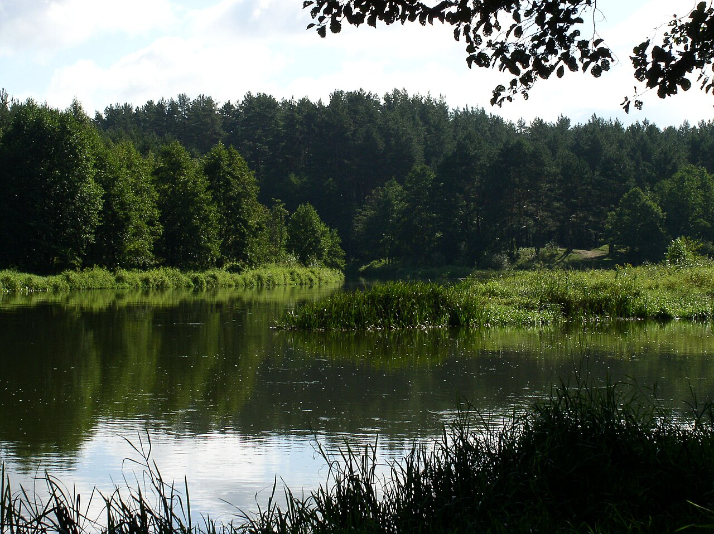
사진: Alex Zelenko · CC BY-SA 4.0 · Wikimedia Commons 나라치 호수Возера Нарач
벨라루스의 대표 대형 호수로 산림·수생생태·휴양 문화 소개에 적합.
-
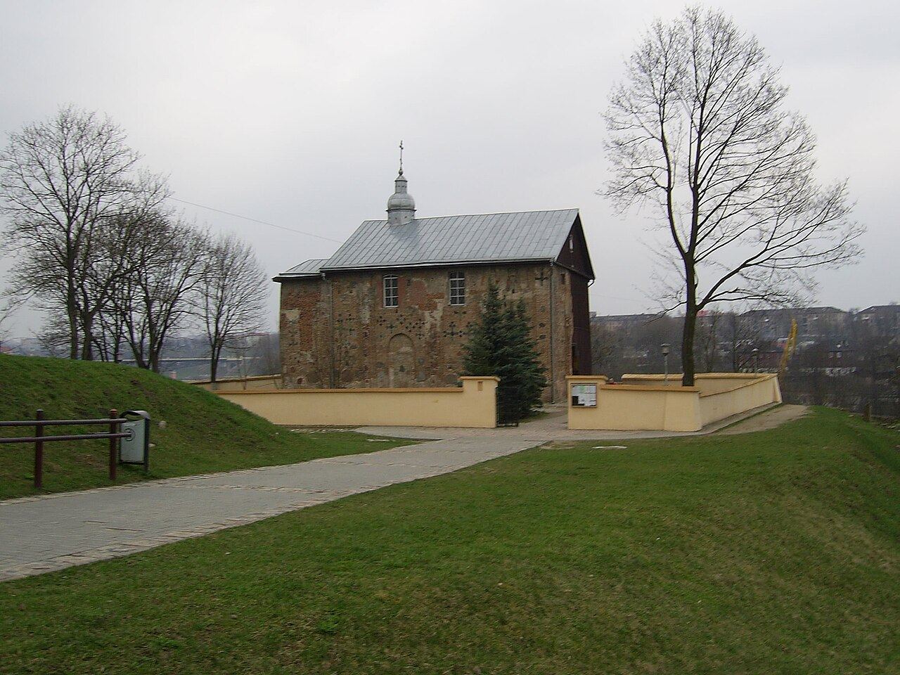
사진: Vit Koz · CC BY-SA 4.0 · Wikimedia Commons 흐로드나 카로자 교회Каложская царква
중세 동슬라브 벽돌건축과 특이한 타일 장식; 강 제방의 보존 논의.
-
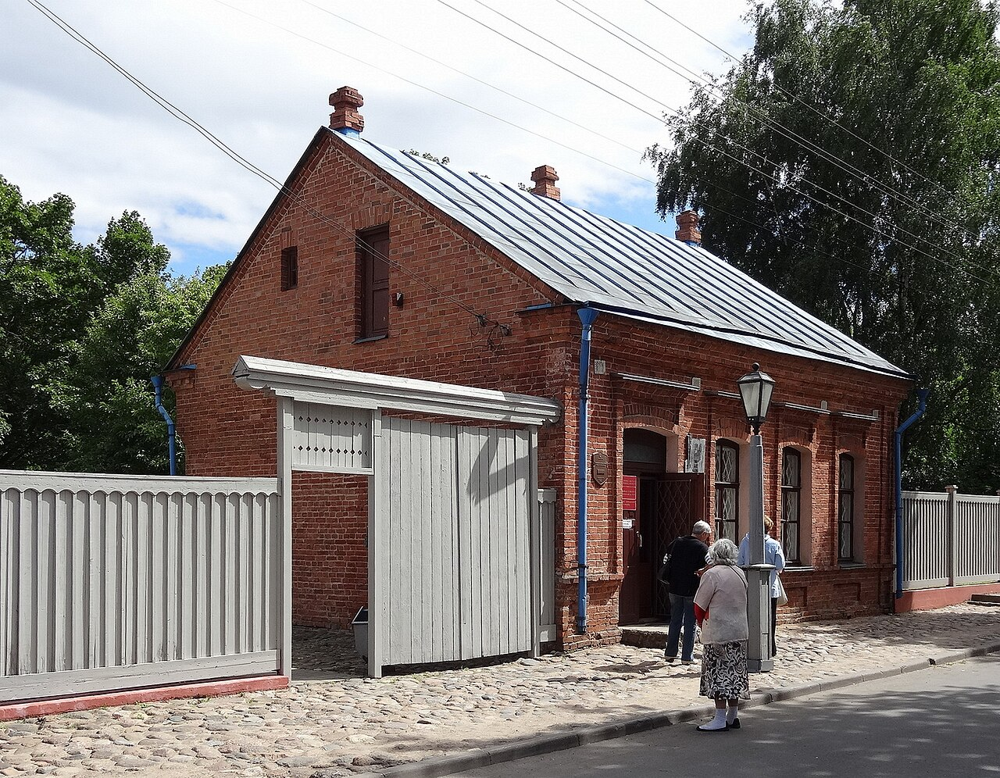
사진: Jurasikt · CC BY 3.0 · Wikimedia Commons 비쳅스크 샤갈의 도시Віцебск / Музей Марка Шагала
마르크 샤갈 출생지의 다언어·유대 문화사와 20세기 미술사의 연결.
-
사진 준비 중
맞는 사진을 구하는 대로 채웁니다. 다른 사진으로 대신하지 않습니다. 브레스트 철도 역사·국경철도Брэсцкі чыгуначны вакзал
동서 유럽 철도 궤간 전환 및 국경물류의 역사를 상징하는 공간.
-
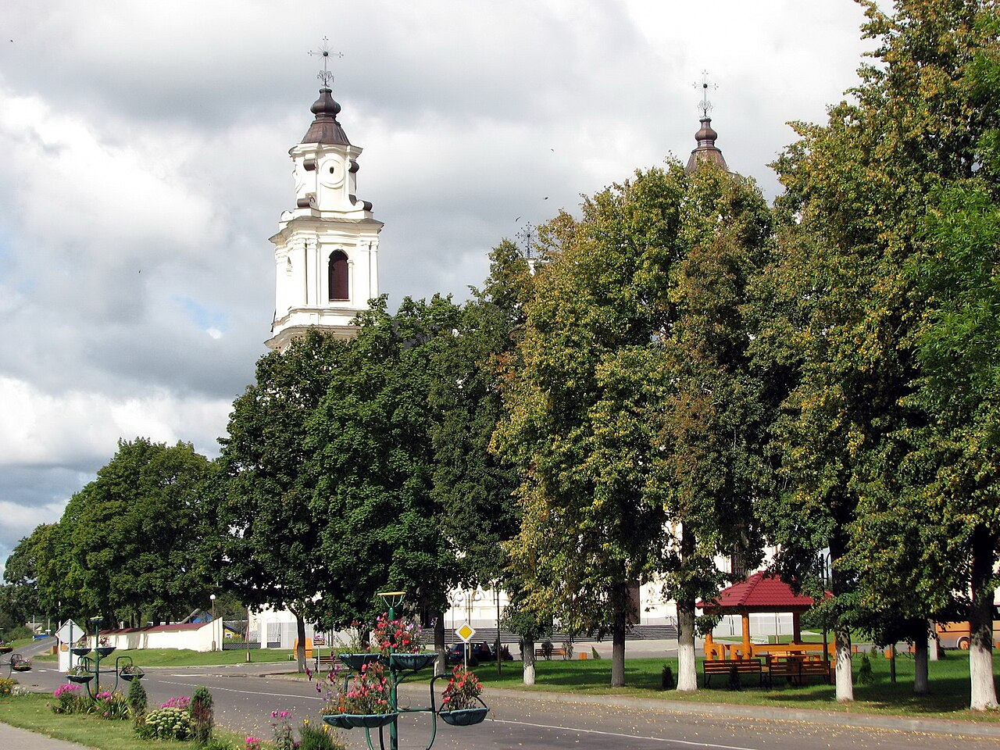
사진: sandexx · CC BY 3.0 · Wikimedia Commons 부드슬라우 성모 성당Касцёл Унебаўзяцця Найсвяцейшай Панны Марыі
유네스코 무형유산 '부드슬라우 축제'와 연결되는 신앙 공동체의 중심지.
-
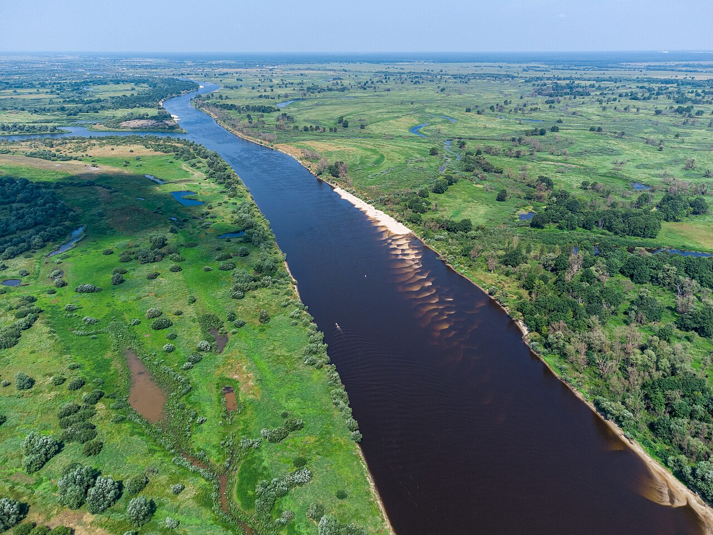
사진: Budgawl · CC BY-SA 4.0 · Wikimedia Commons 프리피야트강 폴레시아 습지Палессе / рака Прыпяць
동유럽 대하천 범람원과 생물다양성, 전통 어로·목조 문화의 생태지역.
자세히 보기
- 볼거리
- 체르노빌 오염지역 및 우크라이나 접경 접근 제한 확인; 방문 유도 금지
- 방문 유의사항
- 입국·체류 안전 확인 전 여행 권유 아님
여행 전에 확인하세요
운영시간·입장료·예약·개방 여부는 계절과 상황에 따라 바뀝니다. 방문 전에 각 명소의 공식 안내에서 다시 확인하세요. 카드의 "자세히 보기"에 참고한 출처를 적었습니다.